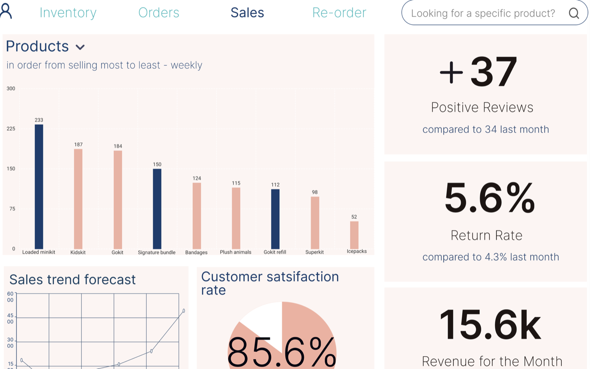

Keep > Going: one internal tool, three very different jobs
A self-directed project built around a real small business: a first-aid company with a 4.9-star rating and more orders than its process could carry. The answer wasn't one dashboard — it was three, sharing a spine, each opening on the numbers that particular team needs.

The brief I set myself
Keep > Going sells uniquely packaged first-aid kits — designs aimed at moms, teachers, nurses, grandparents — plus bandages, refill packs, and ice packs. As a small local business they hold a 4.9-star review average and a lot of happy customers. Growth was the problem.
- Handle the volumeA workable way to process the orders now coming in
- Answer the unhappyGive customer service a route through dissatisfaction reviews
- See the pipelineTrack what's shipped, processing, and delivered — and market on it
Three roles, three days
I researched existing back-end tools and inventory dashboards first — Geckoboard and Microsoft's inventory dashboards were the most useful references, dense with statistics without overwhelming the person reading them.
Then I worked out what each role actually does day to day, because that determined what each one should land on:
- Distribution — orders in chronological order from late to on time, searchable, showing which are handled and which need to go out now.
- Customer service — previous orders, customer information, and satisfaction scores, with order lookup for refunds and exchanges from a call centre.
- Sales executives — best and worst sellers, satisfaction scores, sales forecast, average monthly revenue, return rates, and positive reviews.
The shared discovery: a dedicated orders page serves both distribution and customer service, so it belongs in the spine rather than in either silo.
Wireframes to mockups
Each division gets its own login, so the company knows who is doing what — and, as I argued in the proposal, who is putting in the extra work and deserves the credit.
The wireframes went through a real edit. The customer service form started too bold and too spacious; I cut the weight, turned the search and submit inputs into actual buttons so they stopped reading as fields, and fixed the input spacing. On the distribution re-order page I pulled the product details onto the form itself, so nobody has to bounce between two pages to file a request, and added an employee-name field for accountability.
The high-fidelity pass added the things a wireframe can't carry: colour-coded order status between unfulfilled and in progress, an order count sitting above “Orders” so the backlog is visible at all times, one-click re-order buttons on the products running low, and a dropdown to switch the best-sellers chart between weekly and monthly.
What I'd test next
The design was built from research into what each role does daily, but the proof is in a shift, not a review. What I would put in front of the three teams:
- Distribution — can someone identify every order at risk of shipping late within the first thirty seconds of opening the page? That is the single job of that screen.
- Customer service — timed lookups on a live call. The refund, return, exchange, and notes actions all sit on one screen specifically so a rep never has to say "bear with me" — worth confirming that holds under pressure.
- Sales — whether the weekly and monthly toggle answers the question people actually ask, or whether they still export to a spreadsheet. Falling back to Excel is the clearest possible signal that a dashboard has missed.
The baseline to measure against already exists: how long these tasks take today, before the tool. Without that, an internal dashboard can only be argued for, not demonstrated.
Where it landed
Three role-specific views on a shared structure, so a customer service rep and a distribution lead can talk about the same order without using two different tools — and the sales team can see both sides of the business from one page.